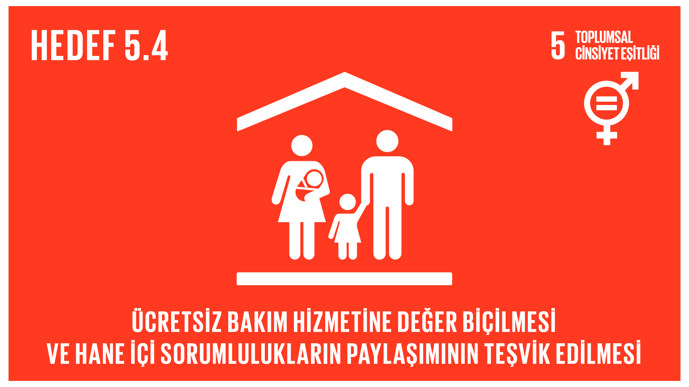
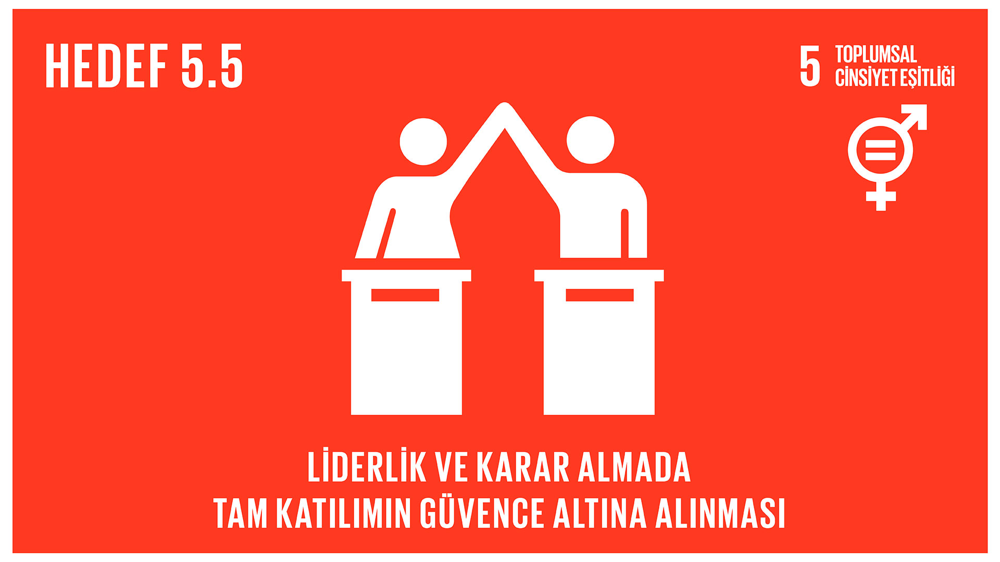
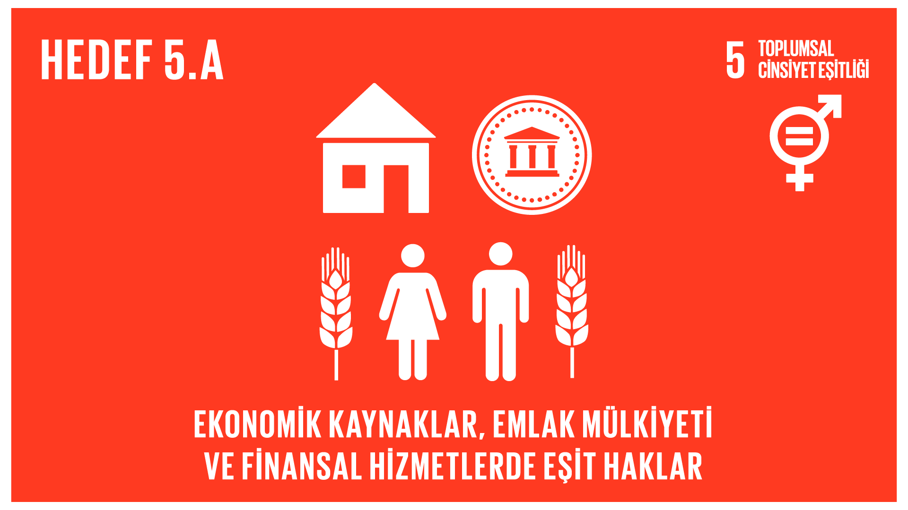
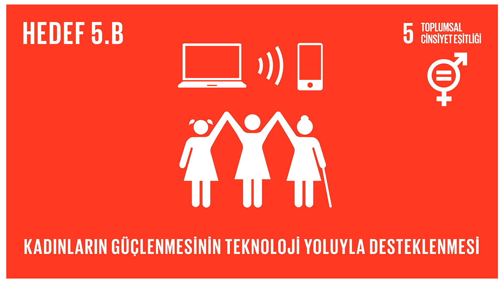

HEDEFLER
5.1. Kadınlara ve kız çocuklarına yönelik her türlü ayrımcılığın her yerde sona erdirilmesi
5.1.1. Cinsiyet temelinde ayrımcılık yapmama ve eşitliği uygulama, güçlendirme ve teşvik eden yasal çerçevelerin yürürlükte olup olmaması
5.2. Kamu alanları ve özel alanlarda, bütün kadınlara ve kız çocuklarına yönelik, kadın ticareti, cinsel ve her türlü istismarı da kapsayan şiddetin her türünün ortadan kaldırılması
5.2.1. Şiddetin türüne ve yaşa göre, son 12 ay içinde mevcut ya da eski partneri tarafından fiziksel, cinsel ya da psikolojik şiddete maruz kalan daha önce ilişkisi olmuş 15 yaş ve üzeri yaştaki kadın ve kızların oranı
5.2.2. Yaşa ve olayın oluş yerine göre, son 12 ay içinde partneri dışındaki biri tarafından cinsel şiddete maruz kalan 15 yaş ve üstü kadın ve kızların oranı
5.3. Çocuk evliliği, erken yaşta zorla evlendirilme ve kadın sünneti gibi bütün zararlı uygulamaların ortadan kaldırılması
5.3.1. 15 yaşından önce ve 18 yaşından önce evlenmiş ya da bir birliktelikte olmuş 20-24 yaştaki kadınların oranı
5.3.2. Yaşa göre, kadın sünneti/kesme geçirmiş 15-49 yaş arası kadın ve kızların oranı
 5.4. Ücretsiz bakım ve ev işlerinin kamu hizmetleri, altyapı ve sosyal koruma politikalarının sağlanması ve hane ve aile içinde sorumluluğun ulusal açıdan uygun bir biçimde paylaşılmasının geliştirilmesi yoluyla tanınması ve değer görmesi
5.4.1. Cinsiyet, yaş ve yere göre ücretsiz ev işleri ve bakıcılık için harcanan zamanın oranı
 5.5. Kadınların siyasi, ekonomik ve sosyal hayatın karar verme süreçlerine tam ve etkin bir biçimde katılımlarının ve kadınlara karar verme mekanizmalarında, her düzeyde lider olabilmeleri için eşit fırsatlar tanınmasının güvence altına alınması
5.5.1. Yerel yönetimler ve ulusal parlementolardaki kadınların sandalye oranı
5.5.2. Yöneticilik pozisyonlarındaki kadınların oranı
5.6. Uluslararası Nüfus ve Kalkınma Konferansı Eylem Programı, Pekin Eylem Platformu ve bunların gözden geçirme konferansları sonucunda ortaya çıkan konferans çıktılarına uygun olarak cinsel sağlık ve üreme sağlığı haklarına evrensel erişimin sağlanması
5.6.1. Gebelik önleyici uygulamaların kullanımı, cinsel ilişkileri ve üreme sağlığına ilişkin kendi bilinçli kararlarını veren 15-49 yaş kadınların oranı
5.6.2. 15-49 yaş kadınlara cinsel sağlık ve üreme sağlığına ilişkin bilgi ve eğitime erişimi kanun ve yönetmeliklerle garanti eden ülkelerin sayısı
 5.a. Kadınların ekonomik kaynaklara ulaşma, toprak ve diğer mülk türlerine sahip olma ve üzerlerinde kontrol kurabilme, finansal hizmetler, miras ve doğal kaynaklara erişimleri gibi konularda ulusal yasalara uygun olarak eşit haklara sahip olmaları için reformlar yapılması
5.a.1. (a) Cinsiyet ayrımında, tarımsal arazi üzerinde mülkiyet veya güvenceli haklara sahip toplam tarımsal nüfus oranı, ve (b) kullanım hakkı ayrımında, tarım arazisi sahipleri veya hak sahipleri arasında kadınların oranı
5.a.2. Toprak sahipliği ve/veya kontrolünde kadınların eşit haklarını garantileyen yasal çerçeveleri olan (örf ve adet hukuku dahil) ülkelerin oranı
 5.b. Kadınların güçlenmelerinin ilerletilmesi için özellikle bilgi ve iletişim teknolojileri olmak üzere etkinleştirme teknolojisinin kullanımının geliştirilmesi
5.b.1. Cinsiyete göre cep telefonu sahibi bireylerin oranı
5.c. Toplumsal cinsiyet eşitliğinin ilerletilmesi ve kadınların ve kız çocuklarının her düzeyde güçlenmeleri için sağlam politikaların ve yasal olarak uygulanabilir mevzuatların kabul edilmesi ve güçlendirilmesi
5.c.1. Cinsiyet eşitliği ve kadınların güçlendirilmesi için kamu ödenekleri yapan ve izleme sistemleri olan ülkelerin oranı